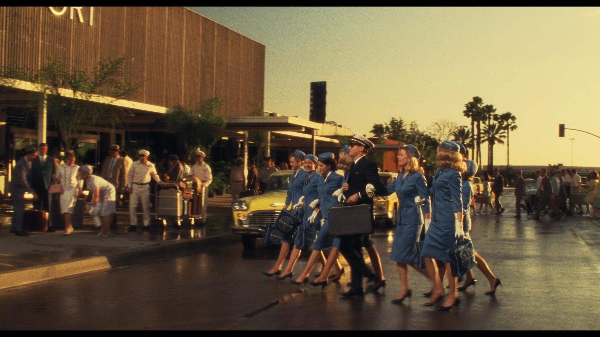

Der Film spielt in den 1960er Jahren. Zu dieser Zeit lernt Frank Abagnale Jr von seinem Vater das Geschick mit Menschen umzugehen und Welchen Einfluss Kleidung und gute Manieren auf andere haben. So beginnt Frank damit das gelernte in die Tat umzusetzen indem er sich Für mehrere Wochen als Französisch Aushilfslehrer ausgibt und an seiner Schule unterrichtet.

Als das Kleinunternehmen seines Vaters pleite geht reicht seine Mutter die Scheidung ein und Frank steht vor der Wahl, bei wem er aufwachsen möchte. Anstatt sich zwischen seinen Eltern zu entscheiden, macht er sich auf nach New York und versucht sich mit primitivem Scheckbetrug über Wasser zu halten. Erst nach einigen Fehlversuchen gelingt es ihm die Schecks glaubwürdig zu fälschen. Bereits in dieser Zeit zeigt sich sein Geschick, indem er Schecks auf weit Entfernte Banken ausstellt gelingt es ihm für mehrere Tage Schecks an einem Ort zu verwenden, bevor sein Betrug bemerkt wurde.
Im fällt auf, dass es schwer ist glaubwürdig höhere Schecks zu fälschen. Aus diesem Grund, und weil er die gesellschaftliche Stellung von Piloten bewundert, beginnt er sich als Pilot auszugeben. So gelingt es ihm Betrug mit immer höheren Summen zu begehen. Während seiner Zeit als Pilot gelingt es ihm mehrere tausend Meilen Kostenlos als Deadhead bei anderen Fluggesellschaften mitzufliegen.
Durch sein neues Muster des Betruges wird schnell das FBI in Form von special Agent Carl Hanratty auf ihn Aufmerksam. Von hier an beginnt ein unablässiges Katz und Maus Spiel zwischen den beiden. Zu beginn gelingt es Hanratty sogar beinahe Frank zu fassen, jedoch gibt dieser sich als Secret Service Agent aus, wodurch er nur knapp entkommt.
Trotz dem ständigen Risiko erwischt zu werden versucht Frank den Kontakt zu seinem Vater aufrecht zu erhalten. So treffen sie sich mehrfach zum Essen und Frank will im sogar ein Cabrio schenken. Dieser lehnt jedoch ab, da er auf Grund von Steuerschulden unter der Überwachung der Finanzämter steht.
Später lernt er in einem Krankenhaus die Krankenschwester Brenda kennen und verliebt sich sofort in sie. Aus diesem Grund bewirbt er sich mit einem gefälschten Abschluss der Harvard Medical School, um einen Platz als Oberarzt. Durch das Prestige, welches ihm sein Abschluss bringt und das Wissen aus Krankenhausserien kann er den Schein waren, obwohl er kein Blut sehen kann.
Als Frank erfährt, dass Brenda von ihrer Familie verstoßen wurde, hält er vor ihrem Vater um ihre Hand an. Um ihren Vater von sich zu überzeugen erzählt Frank er habe wie ihr Vater sein Jurastudium in Berkley gemacht. Das ermöglicht es ihm als Rechtsanwalt für Brendas Vater zu arbeiten und wieder schafft er es sich durch Fernsehserien den nötigen Fachjargon anzueignen.
Während ihrer Verlobungsfeier taucht unerwartet Agent Hanratty auf. Frank Abagnale Jr will fliehen und versucht auch Brenda von einer Flucht zu überzeugen. Als sie sich dann Tage später am Miami Airport wieder treffen wollen, bemerkt Frank rechtzeitig, dass er hintergangen wurde und bereit FBI Agenten den Flughafen überwachen.
Um and den Behörden vorbei zu kommen gibt er sich wieder als Pan-Am Pilot aus und fährt zu einem, in der nähe gelegenen College, um junge Frauen als Flugbegleiterinnen anzuwerben. Mit mehreren Flugbegleiterinnen als Teil seiner Tarnung, gelingt es ihm an den Sicherheitsbehörde vorbei in einen Flug nach Europa zu entkommen.

Durch eine Äußerung von Franks Mutter zu ihrem Heimatdorf in der französischen Provinz, erhält Hanratty den entscheidenden Hinweis, um Frank zu überführen. Am Weihnachtsabend 1969 stellt Agent Carl Hanratty mithilfe der französische Polizei Frank, der mittlerweile eine Druckereifabrik führt, um gefälschte Schecks herzustellen. Nach seiner Festnahme wird Frank Abagnale Jr wieder in die USA überführt. Als er von Agent Hanratty mitgeteilt bekommt, dass sein Vater in einem Unfall umgekommen ist, gelingt es diesem aus dem Flugzeug über die Rollbahn zu entkommen.
Dieses Ereignis hatte Frank zutiefst getroffen, weshalb er sich auf den Weg zu seiner Mutter begibt. Dort wird er von dutzenden FBI Agenten schließlich gestellt. Vor Gericht wird er zu 12 Jahren Haft wegen Scheckbetrugs verurteilt.
Nachdem er einige Jahre seiner Haft abgesessen hat, bekommt er vom FBI das Angebot die restliche Zeit seiner Haft in Form von Arbeit für die FBI abzusitzen. So beginnt Frank für das FBI als Sonderberater in Sachen Scheckbetrug zu arbeiten. Dies tut er über Jahrzehnte und entwickelte dabei eine Vielzahl an Sicherheitsmaßnahmen gegen Scheckbetrug für Banken.